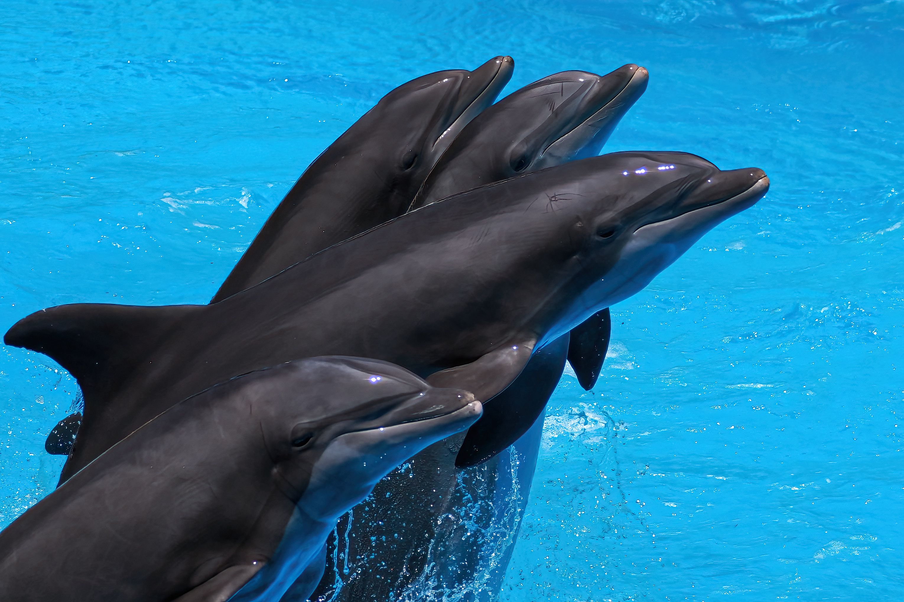
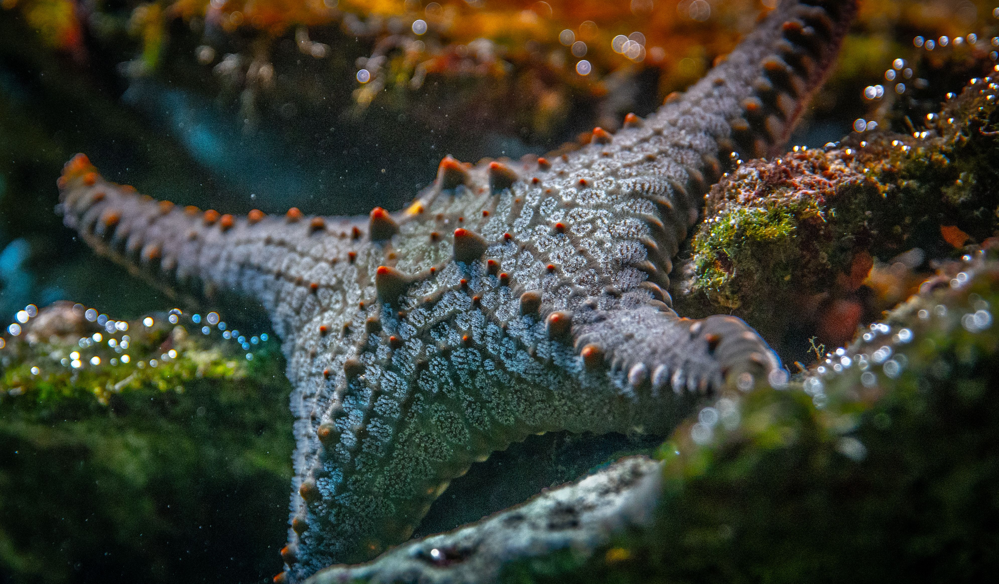
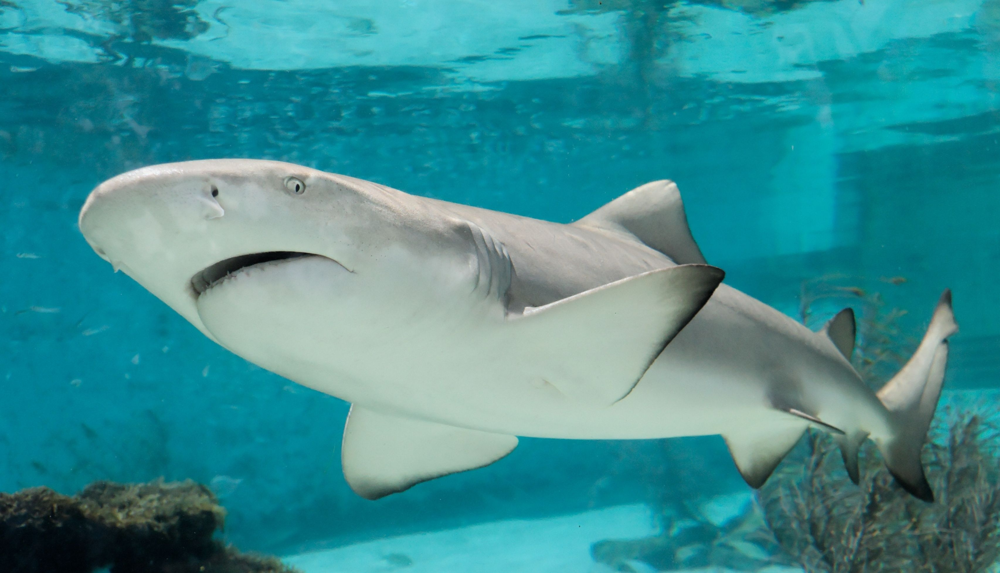
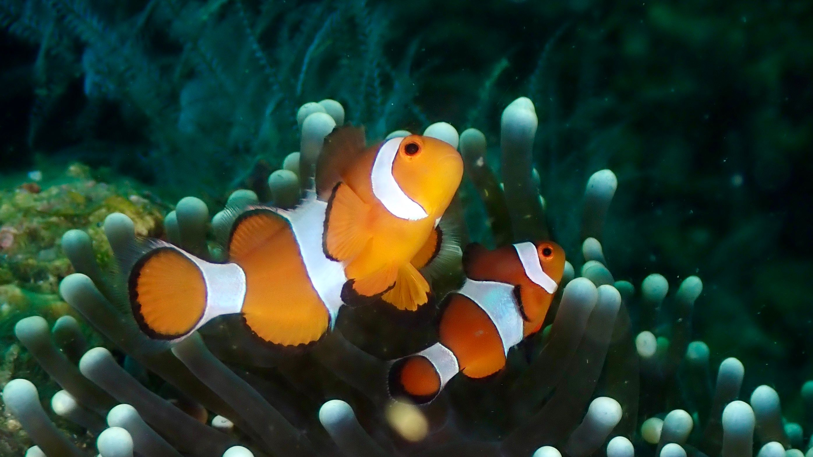
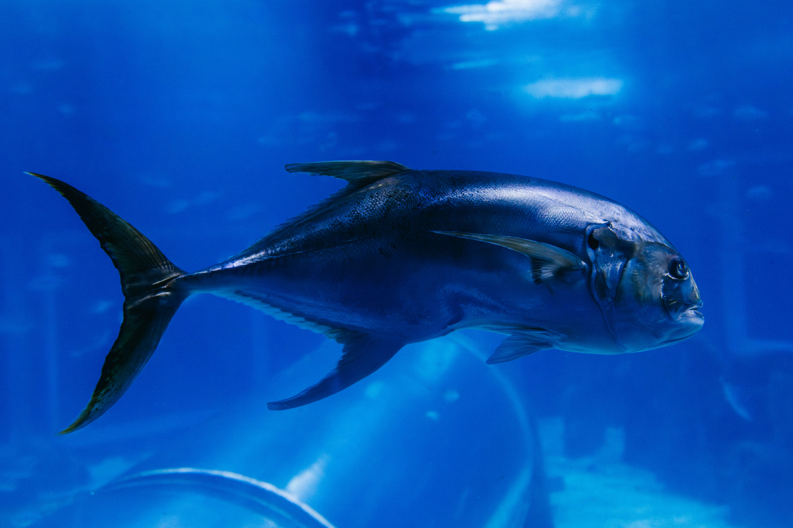
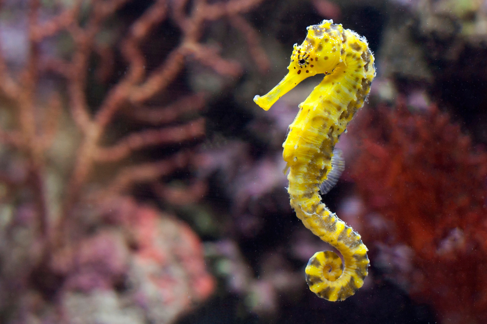
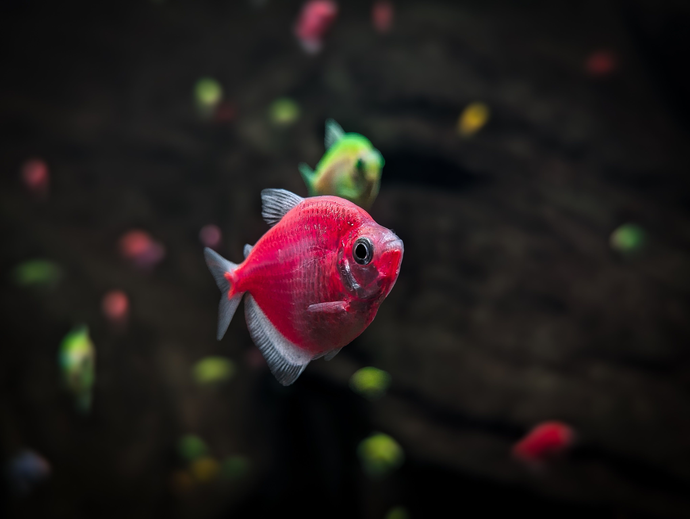

What are Fish?
Fish are aquatic vertebrates that account for more than half of all vertebrate species known to science. They live almost exclusively in water, breathing through specialized organs called gills and using fins for propulsion and steering.
Cold-blooded and remarkably diverse, fish have mastered virtually every aquatic habitat on Earth, from shallow coral reefs to the freezing trenches of the deep ocean.
Key Characteristics
1. Gill Respiration: Fish extract dissolved oxygen directly from water by passing it across highly vascularized gill filaments.
2. Lateral Line System: A specialized sensory organ running down their sides that detects vibrations, water pressure changes, and movement in nearby currents.
3. Streamlined Anatomy: Most species feature hydrodynamic body shapes and flexible fins to minimize water resistance while swimming efficiently.

Meet the Fish
While tens of thousands of species inhabit aquatic realms, here are four iconic and recognizable representatives.

Great White Shark
A powerful cartilaginous apex predator known for its acute senses and vital role in marine food webs.

Clownfish
A vibrant reef-dweller famous for its symbiotic, protective relationship with stinging sea anemones.

Bluefin Tuna
A masterclass in speed and endurance, capable of long-distance ocean migrations at incredible velocities.

Seahorse
A uniquely structured fish with a horse-like head, prehensile tail, and males that carry developing eggs.

Where Do Fish Live?
Fish inhabit nearly every aquatic environment on the planet, spanning vast saltwater oceans, deep-sea trenches, winding freshwater rivers, and isolated mountain lakes.
What Do Fish Eat?
Fish display diverse feeding behaviors categorized into specialized ecological niches.
Herbivores & Grazers
Parrotfish and certain carp consume algae, sea grass, and aquatic plants, helping maintain clean reefs and waterways.
Carnivores & Predators
Sharks, groupers, and barracudas hunt smaller fish and marine creatures using speed, stealth, or specialized teeth.
Filter Feeders & Omnivores
Whale sharks and various minnows consume plankton, organic matter, and small crustaceans filtered directly from water.
💡 Did You Know?
Seahorses are the only fish that swim upright, and remarkably, the male seahorse is the one that gets pregnant and gives birth!
Lungfish possess both gills and a primitive lung, enabling them to survive out of water by burying themselves in dried mud during droughts.
Certain deep-sea fish produce their own light using biological chemicals in a process called bioluminescence to attract prey.
Quick Facts
34,000+
Recognized fish species globally
Aquatic Biomes
Found across all global oceans and freshwater systems
Gills
Extracting dissolved oxygen underwater